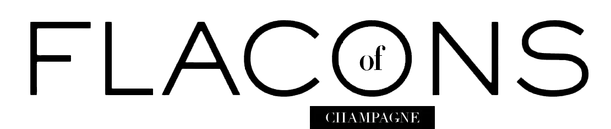
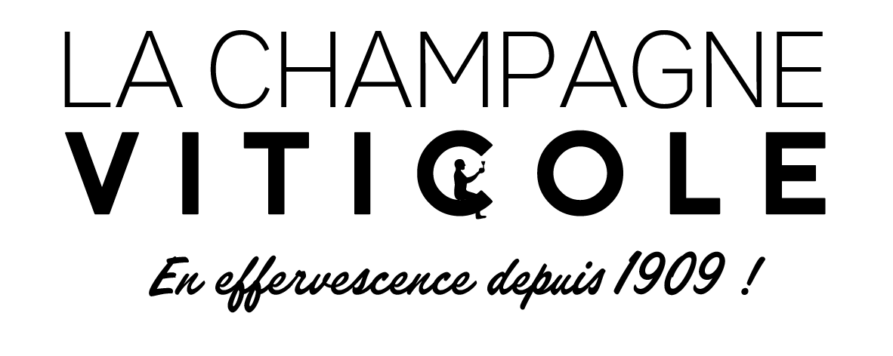

« Lors de mon apprentissage dans les vignes à Puisieulx, j’ai découvert une véritable passion pour la terre. Je me suis inspirée de savoir faire ancestraux me permettant, en faisant évoluer les façons culturales, de voir pousser le fruit de mon labeur à la manière d’un jardinier, puis d’offrir des bulles d’hédonisme et de bonheur. »
Notre valeur fondatrice est le respect de l'environnement et de toute forme de vie pour trouver l'équilibre de nos vignes et de cueillir de bon raisins.
Il repose sur des terroirs singuliers :
Puisieulx, grand cru la Montagne de Reims: principalement des Pinots Noirs (de sélection massale ou de clones) et des Chardonnays qui se développent sur des limons reposants sur calcaire dur.
Le Mesnil-sur-Oger et Oger grands crus de la Côte des Blancs: 22 parcelles avec presque autant d'expositions! Un point commun cependant, le Chardonnay sur un sous-sol crayeux avec des terres fines brunes ou des colluvions crayeuses en surface.
Champvoisy dans la Vallée de la Marne et son sol brun de Marne sur calcaire dur qui laisse s'exprimer le Meunier, et Vauciennes où le Meunier et le Pinot Noir s'épanouissent.
Epernay la capitale du Champagne et son Chardonnay sur les coteaux sud.
Cette pluralité de terroirs et de cépages est sublimée grâce à l'observation attentive et la contemplation minutieuse qui guide Aurore et Jean-Baptiste tant à la vigne qu'au chai.
Je suis Aurore CASANOVA, fille de viticultrice et d’informaticien, j’ai grandi à Paris où j’ai fait un sport étude pour être ensuite danseuse classique professionnellement pendant 7 ans à l’étranger.
Je suis Jean-Baptiste ROBINET, issu d’une famille vigneronne, j’ai grandi en Champagne et j’ai travaillé dans le paramédical en concevant un pied prothétique en carbone pour les personnes amputées.
On s’est rencontrés en 2011 pendant notre formation de viticulture et d’œnologie à Avize en Champagne. Lors de son apprentissage de 2 ans chez Fabrice Pouillon, JB a pu voir pour la première fois des fermentations indigènes en fûts, observer le travail du sol et passer ses premières charrues.
On a commencé par louer des parcelles familiales, notre tâche en les observant, en les contemplant est de comprendre chaque parcelle son développement et son biotope pour faire évoluer les pratiques vers une viticulture alternative, pour récolter un fruit mûr et concentré. Puis en les vinifiant on sublime chaque parcelle et son identité pour les donner à voir et à goûter aux plus curieux.
Une démarche environnementale et humaine
voilà notre philosophie à la vigne.
Pas d’herbicide ni d’insecticide de synthèse,
nous pratiquons une viticulture alternative afin
de transmettre une terre saine à nos enfants et
de récolter des raisins sains pour faire de bon
vins.